CS184/284A Fall 2026 Homework 2 Write-Up
Link to webpage: https://cal-cs184-student.github.io/hw2-tea-engine-writeup/
Link to GitHub repository: https://github.com/cal-cs184-student/hw2-tea-engine

Overview
In this assignment we implemented 2 distinct ways to represent meshes: bezier curves and triangles with half edges.
With bezier curves we used Casteljau's algorithm that used interpolation to create curves effectively. With bezier curves we define several control points with the first and last points being the start and end of the curve and the intermediate points used to define the derivative at the end points. We then extended individual bezier curves to creating surfaces using multiple bezier curves laid out next to each other and interpolating between these curves to create a surface, using values of U and V to draw out the points along the surface.
On the other hand we also implemented triangles with half edges which are technically a greater cost in memory, but still prove helpful since bezier surfaces are notoriously difficult to get right representing meshes. In this assignment we didn't implement the data structure of the half edges and triangles, but we implemented certain manipulations of the data structure in order to create smooth shading by calculating vertex normals and operations such as edge flip, edge split in order to create loop subdivision for upsampling the mesh to become smoother.
It's quite interesting how these two methods achieve the same goal while being completely different approaches and their benefits and downsides. It is particularly interesting that for representing meshes with bezier, they fare better for smoother surfaces since they are defined mathematically to be smooth. But for the triangle meshes since they started simplistic with minimal faces, we needed to implement per vertex normals to get them to look shaded properly unlike the triangle representation which looked low-poly before implementing per-vertex normals. Additionally in order for the triangle based representation to appear more smooth, we needed to loop subdivide, compared to bezier where we did not, since they're implemented with curves in mind. Another interesting thing we learned was the elegance of Casteljau's algorithm, where subdividing with a t-value interpolation would yield a proper bezier curve and how this could be used to interpolate between many different bezier curves to form surfaces.
Section I: Bezier Curves and Surfaces
Part 1: Bezier curves with 1D de Casteljau subdivision
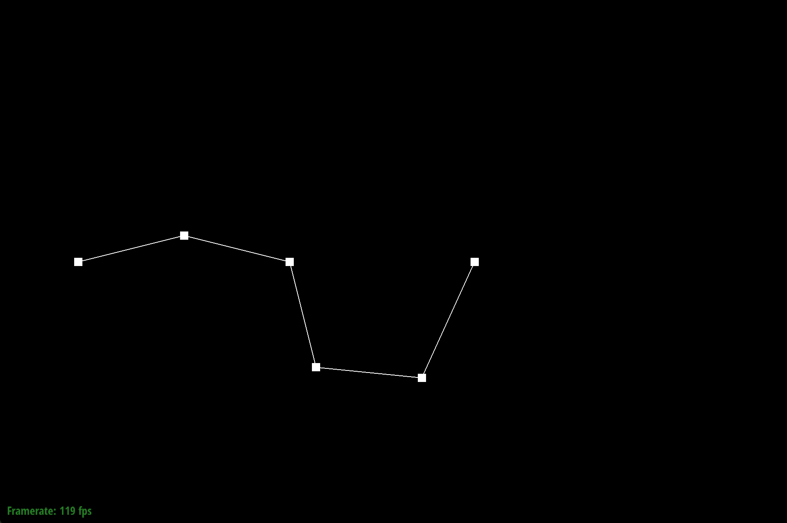
Casteljau's algorithm is an efficient way to generate bezier curves with a set of n ordered control points. The first and last points of the ordered set respectively represent the start and end points of the ending curve, with all of the intermediate points between the start and end being used to determine the derivative at the ends of the curve.
At its core Casteljau's Algorithm uses interpolation between the ordered points using a value of t (a value that represents a parameter that is the progress across the curve) and subdivides the edges between each point using t to interpolate between each point, effectively generating a new set of n - 1 points. Then, recursively you would then interpolate and subdivide your new list of n -1 points until 1 point remains, and this point is guaranteed to be on the defined bezier curve; as a result the full curve can now be drawn by using the final subdivided point and drawing the line from t-value from 0 to 1.
Here is our control points and subdivision steps! There is exactly 5 steps since the number of subdivisions needed is # of control points - 1. (We also made the big dipper with control points here)
|
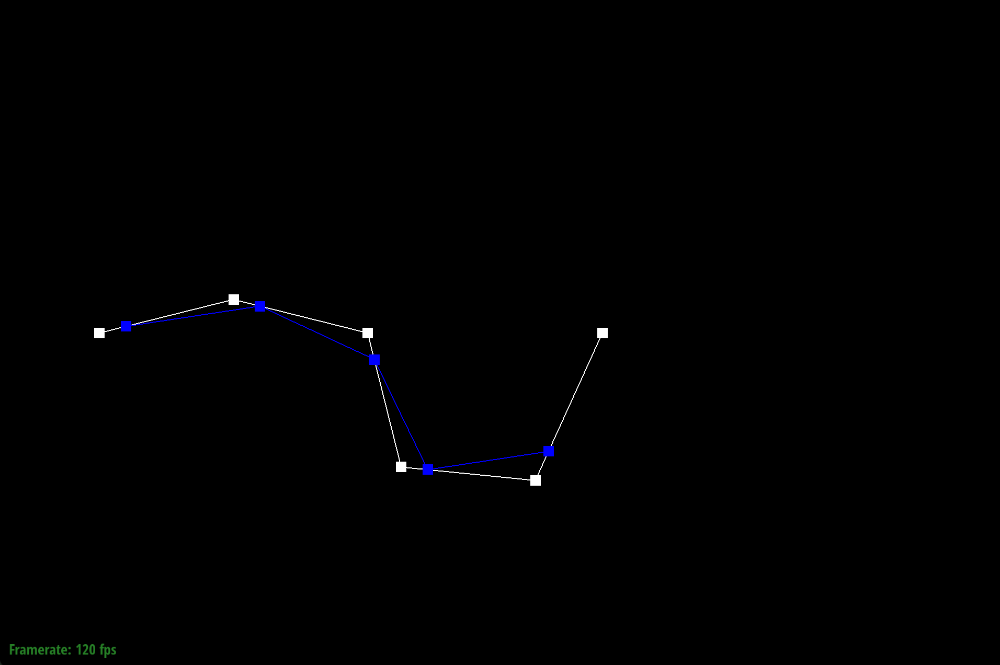 |
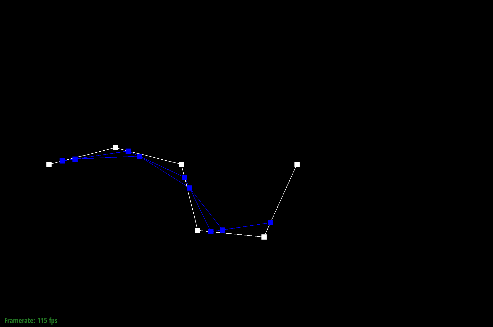 |
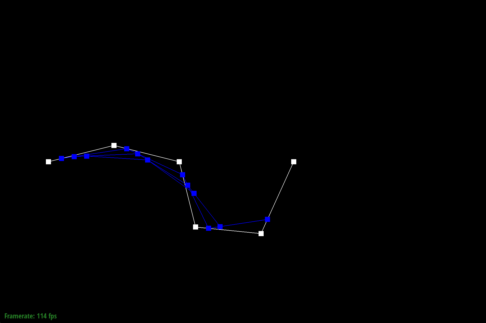 |
|
|
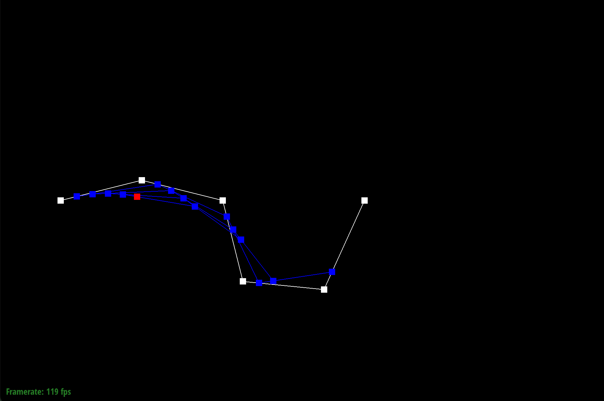 |
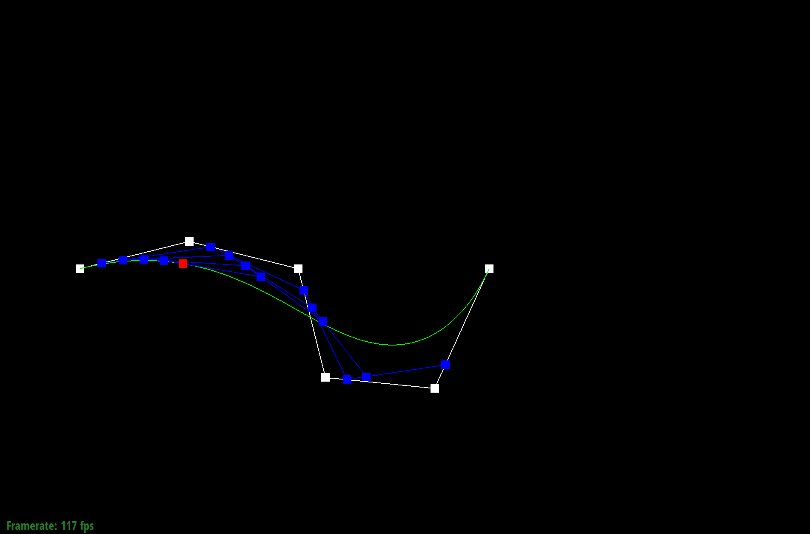 |
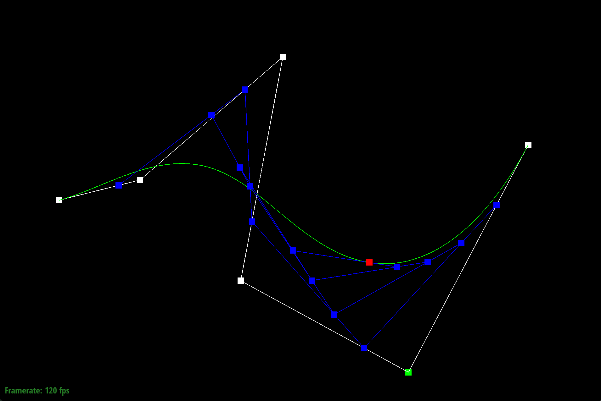
Part 2: Bezier surfaces with separable 1D de Casteljau
Casteljau's algorithm is able to extend to Bezier surfaces with the use of a n x n sized 2-dimensional vector filled with control points that represent a grid-like surface that has control points that control the surface's geometry.
Using bezier curves (fundamentally 1D objects) we can construct a 2d surface by having multiple bezier curves adjacent to each other and interpolate between them, effectively creating a 2d shape that has both width and height. This is exactly how Casteljau's algorithm extends to bezier surfaces, but instead of using a t-value to progress from the start and end of the line, we use a u and v value to interpolate across the surface, with the u being progression across the "x-axis" of the surface and v being across the "y-axis".
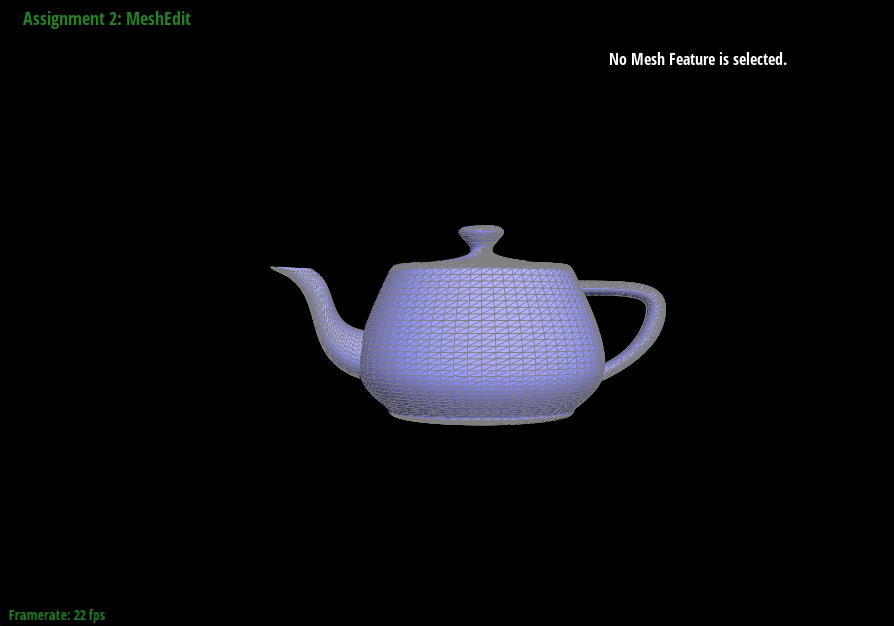
How we implemented it was by using the 2-dimensional vector with control points, where we defined each row as its own bezier curve. Then we use the elements in each row as control points of an individual bezier curve, using the same method we used in the first part to define a point that's on the curve with Casteljau's interpolation, which by using the u value would interpolate from one side of the surface to another.
Then, using the point guaranteed on each individual "row"-bezier curve, we take these points to be control points of another bezier curve that spans from a direction perpendicular to the "row"-bezier curve, which represents the "column"-bezier curve, and by doing the same step we performed once again in part 1, we subdivide and interpolate, getting one final point that we control using the v value to track across the surface from top to bottom.
Section II: Triangle Meshes and Half-Edge Data Structure
Part 3: Area-weighted vertex normals
To implement area-weighted vertex normals, we computed the normals and areas of all triangles the vertex is a part of. Then, we took an average of said normal values weighted by the area of each triangle. We found all faces by starting with the halfedge associated with the vertex, and calling twin and next to get the next halfedge (which tells us the face/triangle), terminating when the original halfedge we started with is reached. For each triangle, we computed the area by taking the norm of the cross product of two sides of the triangle, each obtained by finding the difference between two vertices on the triangle. To do the final vertex normal calculation, we divided all of the areas by the total area, and added the weight times the normal value to the vertex normal value.
|
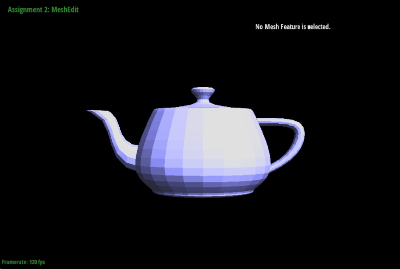 |
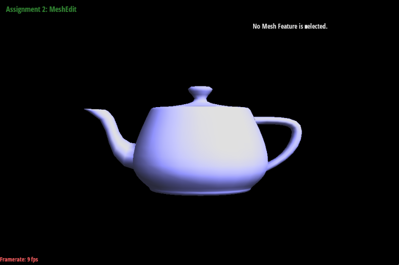 |
Part 4: Edge flip
The mesh is composed of many triangles with each edge being connected to 2 other triangles (as long as they are not boundary edges) and as a result we can imagine the two triangles together as a quadrilateral with an edge dividing them. The edge flip aims to take the splitting edge across the two vertices and split the triangle along the other two vertices of the "quadrilateral" and this was the approach we took towards implementing the edge flip.
|
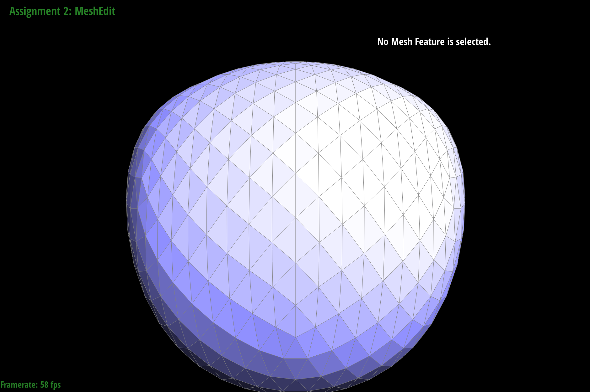 |
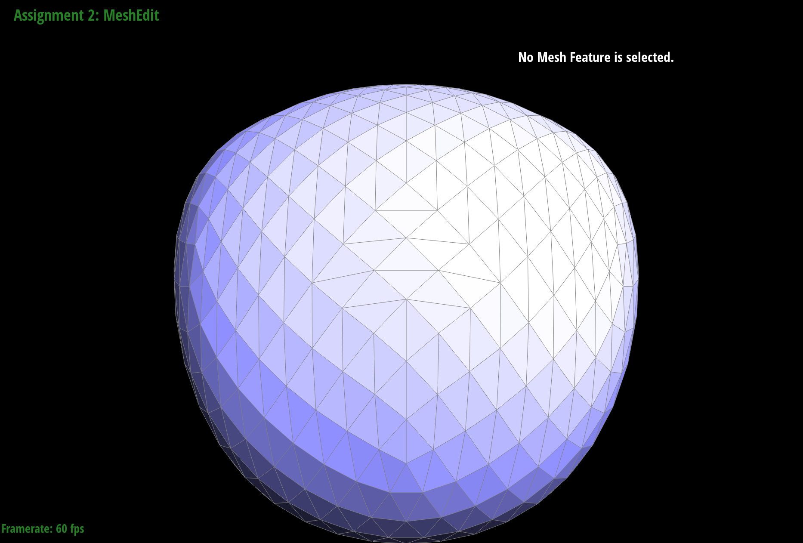 |
In our implementation we reassign the specified flip edge's vertices to the neighboring vertices such that they are on opposite sides of the 2 triangles (and not the original vertices) with a statement like this:
orignalVertex->next()->next()->vertex();
Then subsequently we update and reassign each half edge's properties (namely the next, twin, vertex, edge and face properties) for the affected half-edges such that they align with the edge starting and ending at the resulting vertices, maintaining the connectivity of the half-edges.
The surprisingly simple and interesting implementation "trick" we had to use was we had to pull out pen and paper as well as an online whiteboard several times to draw and track what value each half edge, face and vertex had after the resulting flip. We found this to be particularly useful even for debugging purposes as we were able to track down bugs in our logic after seeing mistakenly assigned iterators.
Debugging Journey: A couple of hours spent drawing (on paper) and redrawing the example transformation, referencing the primer and details on the CS184 slides and extensive scrutinization of the comments in the halfEdgeMesh header file in order to figure out what properties and details for the data structures!
Part 5: Edge split
|
|
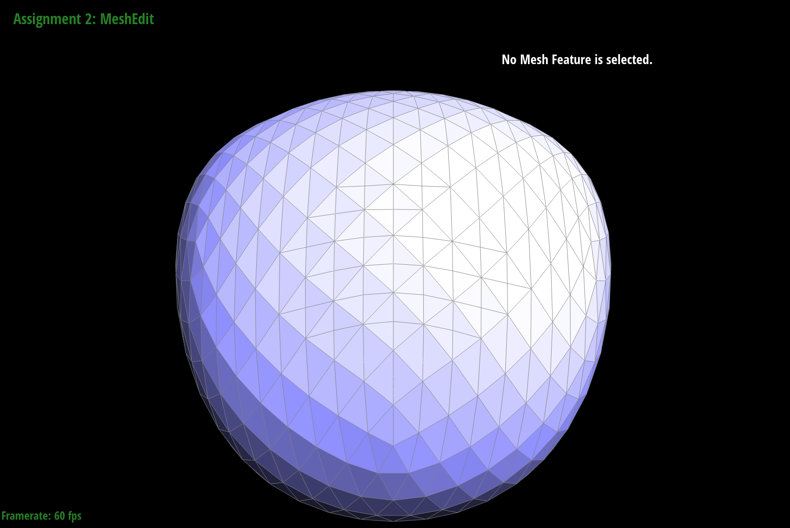 |
|
Similar to the edge flip operation, implementation primarily consisted of mapping out exactly how halfedges, faces, vertices and edges iterators should be reassigned; however with edge splits in particular we had to create 2 new faces, 6 half edges, and one new vertex on top of reassigning the existing ones to morph into the resulting transformation.
To handle everything and make minimal errors (we had learned my lesson from the previous part), to first write and plan everything out drawing the original triangle (before split) and the resulting triangle, mapping the existing halfedges and marking the new ones in the resulting operation. This helped a lot with getting the logic down but towards the end we did run into some segmentation faults which after some further inspection of the code we discovered that we were setting some of the halfedge's properties to properties that had not yet been defined yet, especially with the new generated halfedges, we solved this by caching the initial vertex, face and halfedge values we needed to ensure that they had been defined.
Part 6: Loop subdivision for mesh upsampling
We implemented loop subdivision by first computing and storing the positions of where the vertices should be after the update occurs. Then we iterate through all edges to perform split operations, keeping track of which edges are created in this process for later. New edges were being added in this process, so we had to read the amount of edges before starting the iteration loop to prevent it from splitting forever, we knew this would not skip edges since new edges are appended at the end of the iterator. The new vertices positions are set here too since the vertex positions were associated with the edge, so assigning the positions just reads off of the edge that was just split. Then we flip all new edges that connect old vertices with new vertices and finally put in the new positions for all old vertices, resulting in the correct final upscaled mesh.
Meshes become “smoother” after loop subdivision. The lower poly meshes became more and more like their smoother real life counterparts with more loop subdivision, but also drastically slowed the program down as there were many more tries on screen.
|
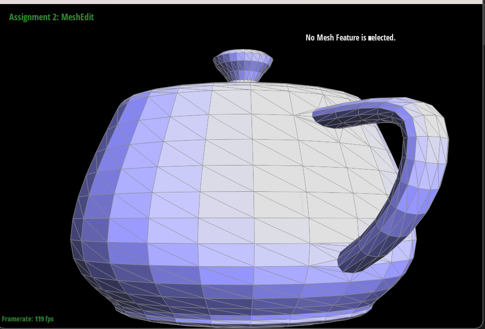 |
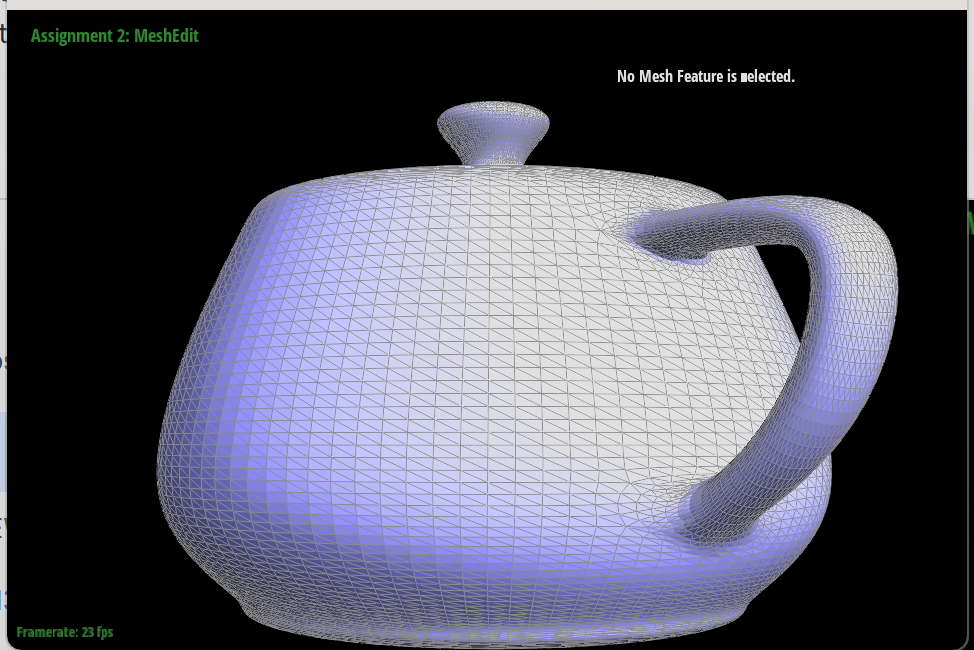 |
|
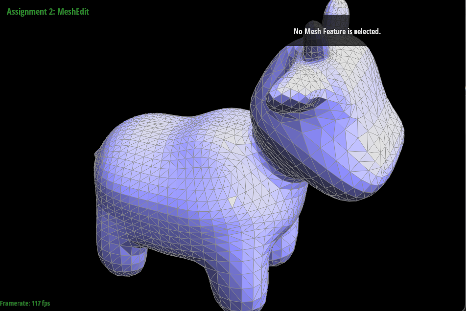 |
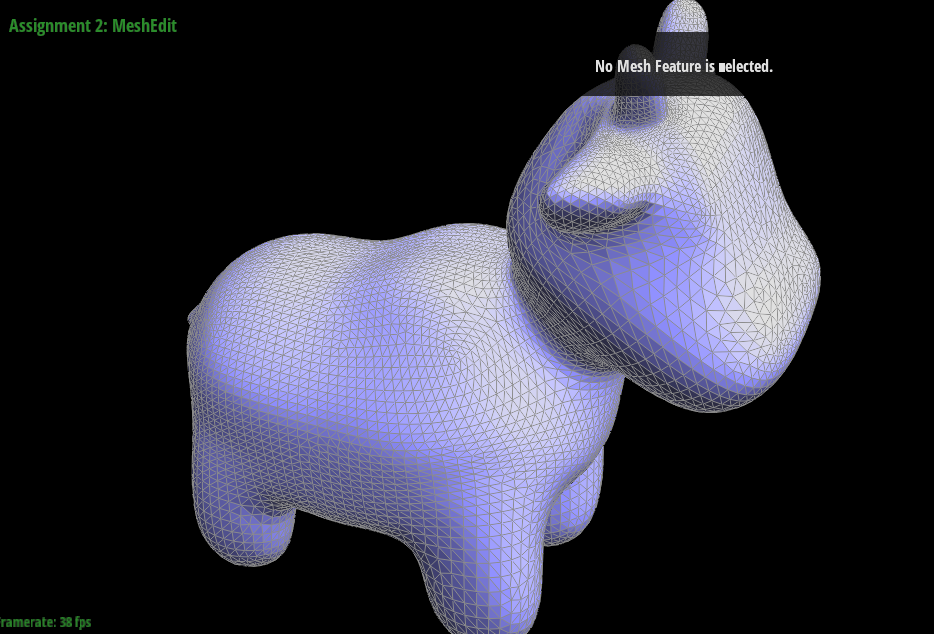 |
The effect of loop subdivision is most apparent on corners and edges. Since the weighting algorithm updates positions based on neighbors and corners that jut out of the object have further neighbors, these features become rapidly collapsed inward upon loop subdivision (aggressive smoothing). For the cube in particular, we can see the effect of the weighting in position updates, since weighting depends on the degree of a vertex, the cube, represented by triangles, will have some vertices with more edges coming out of them, leading to more aggressive inward smoothing compared to vertices with less degree. We can even this out by pre-splitting the triangles on the faces of the cube, leading to the same degree for each vertex, and thus the same treatment when determining new positions for old vertices.
|
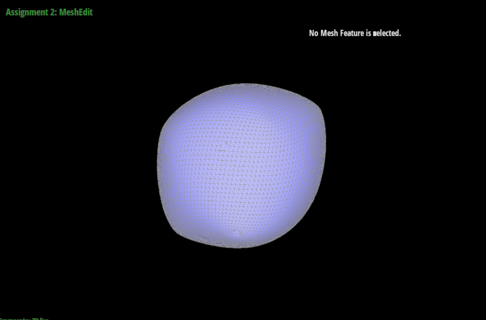 |
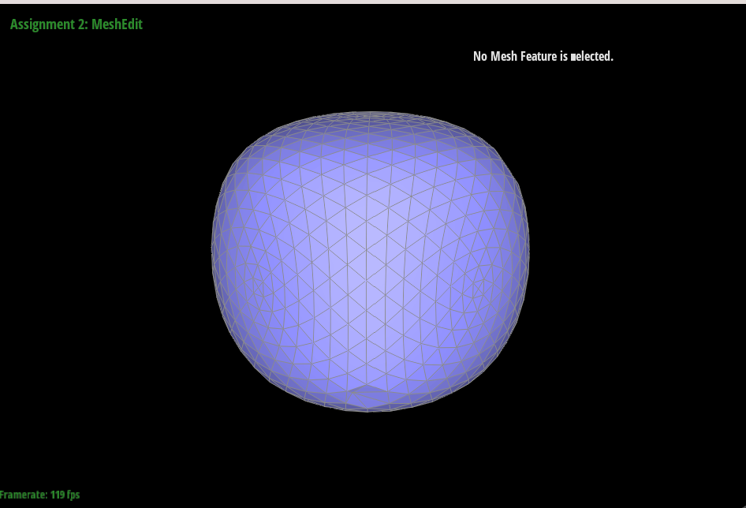 |